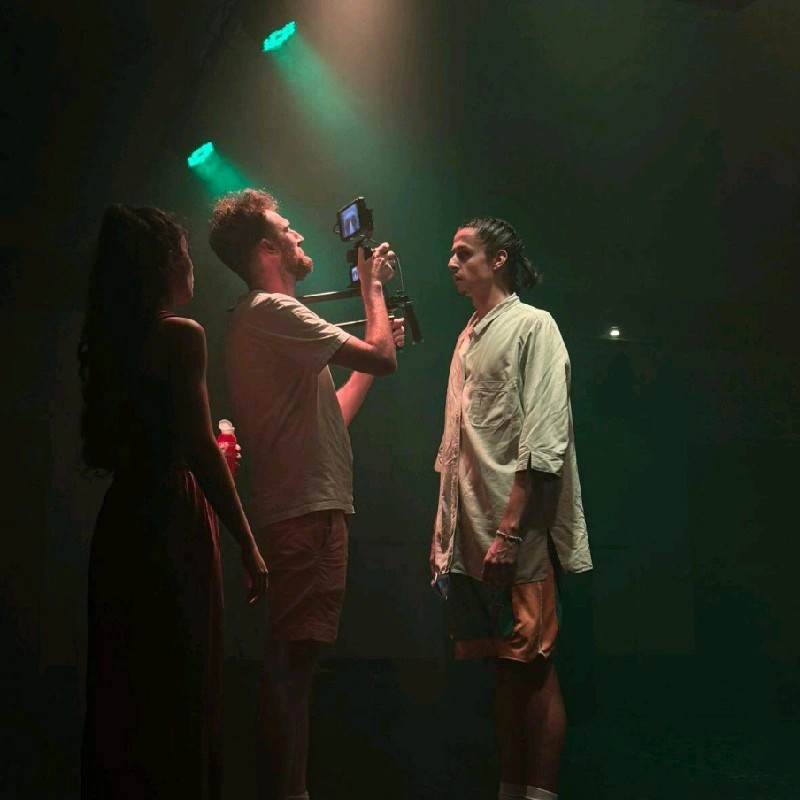

Vos Interlocuteurs
Nos formateurs et consultants sont des experts passionnés, issus du terrain, qui allient expertise technique et talent pédagogique pour garantir votre succès.
Eulalio TORRES
CEO & Fondateur
Docteur en Ingénierie Aérospatiale (PhD) et fort de 15 ans d’expérience en Data Science et IA, j’ai formé plus de 1 000 professionnels (Collège Doctoral Aix-Marseille Université, Pôle Collège des Écoles Doctorales Université de Paris, SUPINFO, IMIE, Campus Academy) à l’IA sans prérequis technique.
Mon double objectif ?
Pour les DRH et dirigeants : faire financer intégralement vos formations par votre OPCO, tout en augmentant la productivité de vos équipes administratives sans recrutement.
Pour les assistantes et managers : vous faire gagner 5 à 10 heures par semaine en automatisant vos tâches rédactionnelles (comptes‑rendus, notes de frais, synthèses).
Je ne vous vends pas du jargon. Je vous donne des prompts opérationnels le premier jour, et je reste votre garant de la qualité pédagogique.
Laurence PEERSMAN
Directrice des Opérations (COO)
Véritable cheffe d'orchestre de Babylone42, Laurence garantit l'excellence opérationnelle et la
réussite absolue de nos déploiements pédagogiques. En analysant finement les besoins réels de votre
entreprise, elle
s'assure que chaque projet surmonte ses défis avec une précision d'horlogère. Pour y parvenir,
elle s'appuie
sur notre puissant réseau collaboratif de développeurs certifiés en Intelligence Artificielle,
nous
permettant d'assembler en temps réel l'équipe d'experts la plus adaptée pour répondre à chaque
défi
technologique.
Financements : Elle coordonne également l'accompagnement des entreprises dans leurs demandes de financement OPCO, AIF et FAF.

Thomas KHAIRALLAH
Formateur Vidéo IA & Réalisateur
Réalisateur indépendant et formateur certifié Adobe, Thomas est le garant de la qualité esthétique et du rendu professionnel de vos productions vidéo. Il maîtrise la chaîne complète : scénarisation (méthode C.O.R.E.), génération d’avatars (HeyGen), sound design (ElevenLabs) et montage dynamique (CapCut). Avec lui, vos équipes passent d’une vidéo “amateur” à un contenu premium prêt pour les réseaux sociaux, en quelques heures et sans agence.
Voir le profil LinkedInChaque formateur et expert apporte une vision unique et une expérience pratique, garantissant des sessions dynamiques et des formations robustes parfaitement adaptées à vos besoins concrets.
Rencontrer notre équipe🎁 En attendant, téléchargez notre guide gratuit :
10 prompts pour automatiser vos comptes-rendus. Laissez-nous votre e-mail pour y accéder immédiatement.